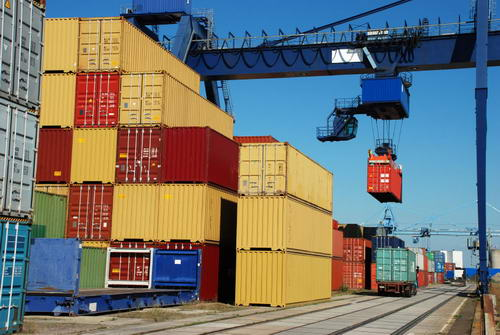

Тел/факс: (048) 737-75-071
Email: management@ralogistic.com.ua
Украина, 65029, г. Одесса, ул. Новосельского, 32, оф. 504


В то время как доставкой груза по одной стране, а уж тем более по одному городу, могут заниматься многие, то вот далеко немногие логистические компании Украины могут заниматься международной транспортировкой грузов. Действительно, международные перевозки – дело очень сложное и ответственное, поскольку необходимо проводить полное логистическое сопровождение, подготавливать все необходимые документы для прохождения таможенного контроля и транспортировки груза по территории других государств. Также необходимо работать с несколькими видами транспортных средств, чтобы доставлять грузы максимально быстро, бережно и по умеренным ценам.
Компания «РА Логистик» уже много лет занимается грузовыми перевозками по территории Украины, а также доставляет грузы во многие страны мира. Немаловажной деталью в международной перевозке грузов является качество упаковки, чтобы в процессе транспортировки груз не получил повреждений.
Одним из главных достоинств компании является подбор оптимального маршрута доставки груза в пункт назначения. При этом может использоваться не только доставка груза автотранспортом, но и перевозка морем. Маршрут подбирается таким образом, чтобы гарантировать его безопасность, быстроту доставки и низкую стоимость транспортировки, что особенно в случае с международными перевозками очень важно. Специалисты компании сопровождают груз от самого загрузочного пункта, и заканчивая пунктом выгрузки и передачи груза в руки адресату. Грузы постоянно отслеживаются, поэтому в любой момент времени специалисты могут сказать, где он находится.
Очень важно, чтобы международной перевозкой одного груза занималась одна компания, поскольку в случае с многочисленными посредниками цена транспортировки существенно увеличивается, а вот риск получить поврежденный груз или вовсе его не получить значительно возрастает. Компания «РА Логистик» работает без посредников и гарантирует своевременную доставку отправленных грузов в целости и сохранности. Мы доставляем грузы во много стран и имеем огромный опыт работы, поэтому знаем, как доставить груз в нужное место максимально быстро, по минимальной цене, и, конечно же, в целости и сохранности.